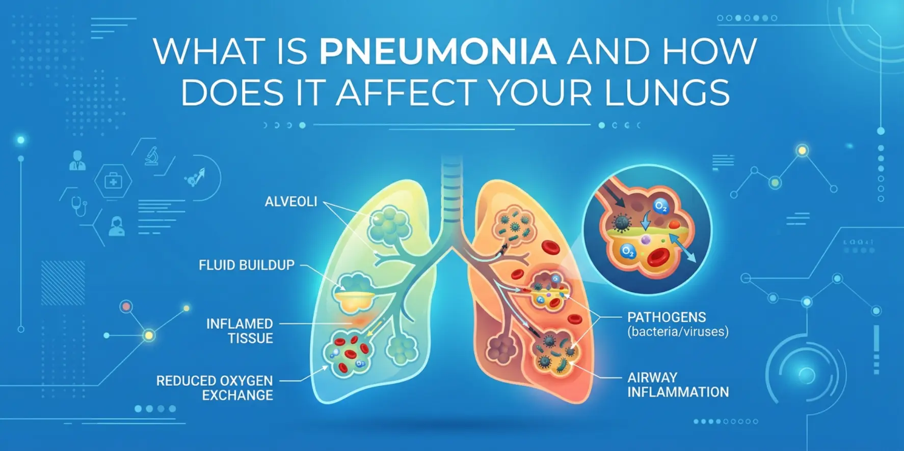
Could a cough, fever, or shortness of breath be more than just a seasonal infection? While many respiratory illnesses improve with rest and basic treatment, some can become serious if they spread deep into the lungs. One such condition is pneumonia, a common yet potentially severe lung infection that affects millions of people worldwide every year....
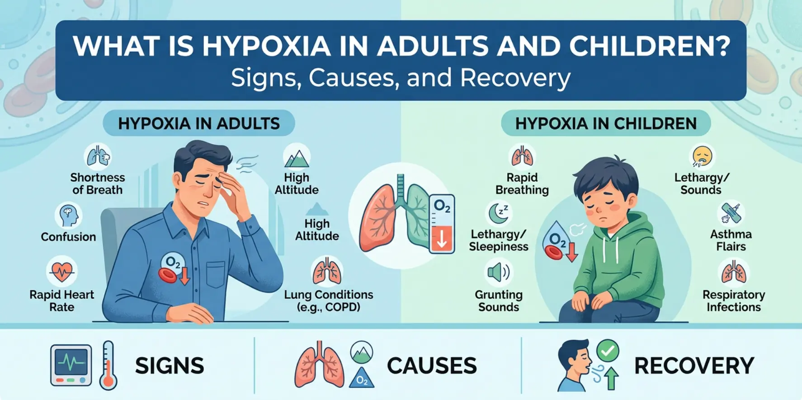
What if your body's most vital organs were not getting enough oxygen? Every cell depends on oxygen to function properly. When oxygen levels drop, essential organs such as the brain, heart, and lungs begin to struggle...
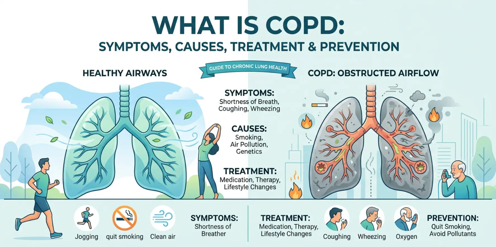
Do you often find yourself short of breath while climbing stairs, walking short distances, or performing everyday activities that once felt easy? While occasional breathlessness can occur for many reasons, persistent breathing difficulties should never be ignored. One possible cause is Chronic Obstructive Pulmonary Disease (COPD), a progressive lung condition that affects millions of people worldw...
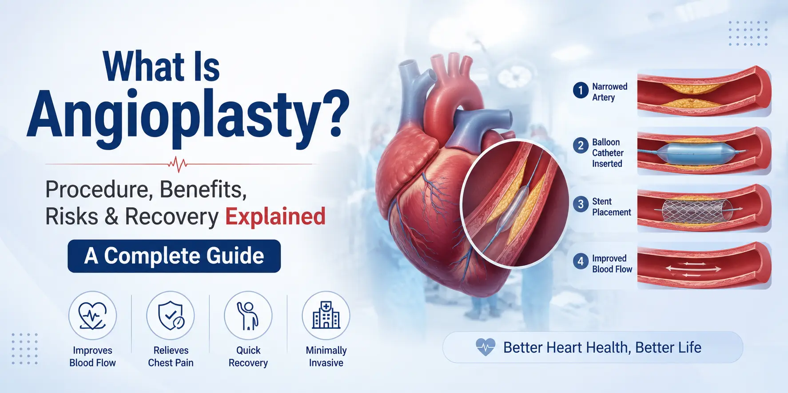
Have you been told that you have a blocked artery and may need angioplasty? Hearing terms such as "heart blockage" or "angioplasty" can feel overwhelming, especially when you are unsure what the procedure involves. However, angioplasty is one of the most performed and effective treatments for restoring blood flow to the heart....
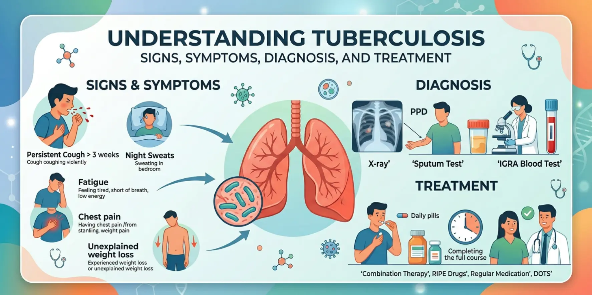
Could a cough that refuses to go away be a warning sign of something more serious than a common respiratory infection? While many people associate a persistent cough with seasonal illness or allergies, it can sometimes indicate tuberculosis (TB), one of the world's oldest and most significant infectious diseases....
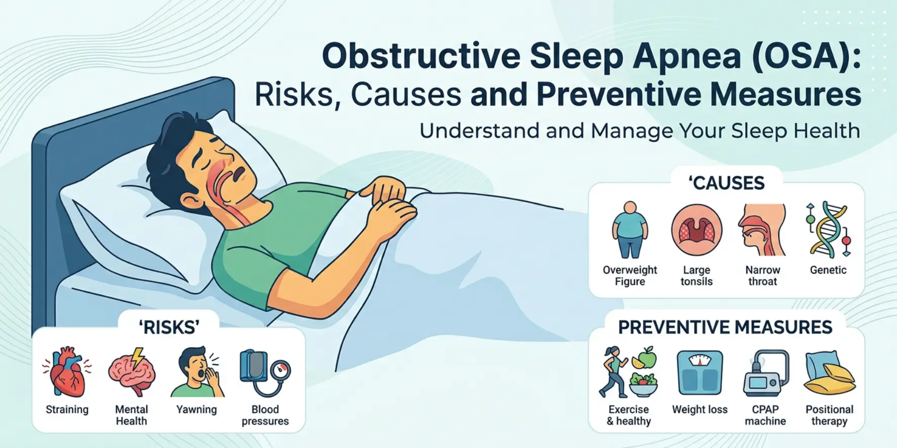
What if the reason you wake up feeling exhausted every morning has nothing to do with how many hours you sleep? Many people assume that loud snoring, daytime fatigue, or poor concentration are simply consequences of stress, ageing, or a busy lifestyle. However, these symptoms may actually point to a serious sleep disorder known as obstructive sleep apnea (OSA)....
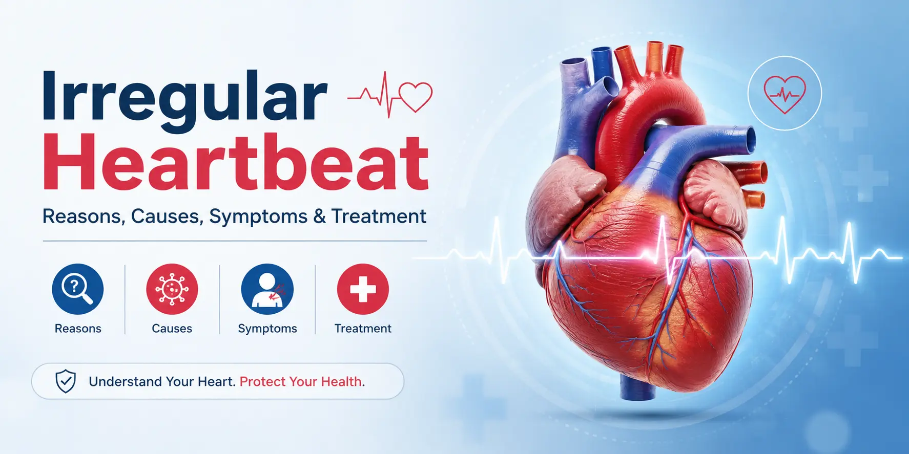
Have you ever suddenly felt your heart racing, fluttering, or skipping a beat for no clear reason? While occasional changes in heartbeat can happen because of stress, anxiety, or caffeine, persistent irregular heart rhythms should never be ignored. Many people describe the sensation as a pounding chest, a fluttering feeling, or a skipped heartbeat that appears unexpectedly during rest or activity....
Have you recently been told that your cholesterol levels are high and wondered whether you can improve them without relying on medication? You are not alone. High cholesterol affects millions of people worldwide and is one of the leading risk factors for heart disease and stroke. The concerning part is that high cholesterol usually causes no symptoms, which is why it is often called a "silent" hea...
Have you been feeling unusually tired or dizzy, or experiencing headaches, during the recent heatwave across many parts of India? Rising summer temperatures and prolonged exposure to heat significantly increase the risk of dehydration, especially among children, older adults, and outdoor workers. ...
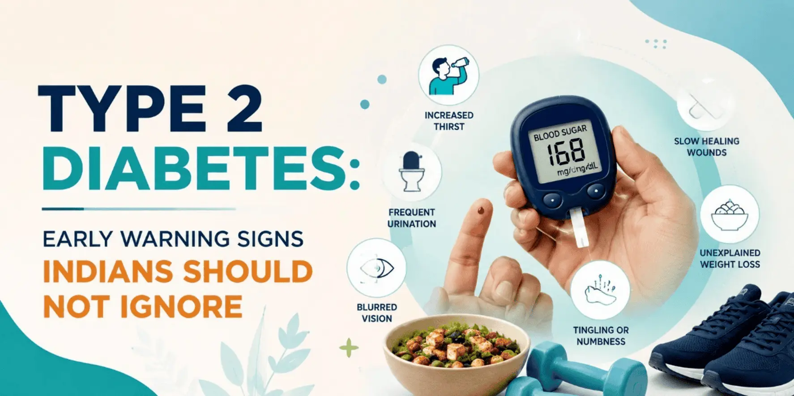
Have you been feeling unusually tired, thirsty, or hungry lately without understanding why? Many people ignore these subtle health changes, assuming they result from stress, irregular meals, or a busy lifestyle. However, these symptoms may be the early signs of diabetes, a condition that is becoming increasingly common in India....
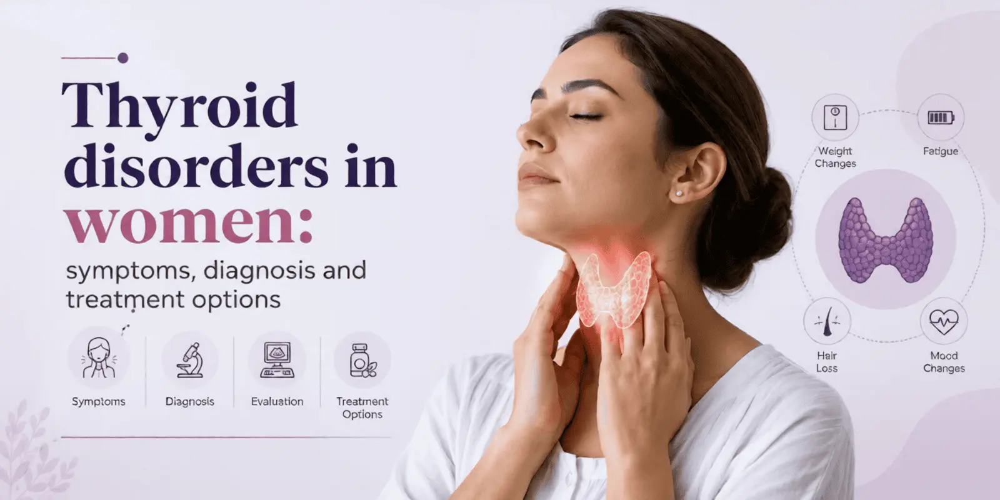
Are you constantly feeling tired, struggling with unexplained weight gain, or noticing sudden mood swings despite maintaining a healthy lifestyle? Many women often dismiss these changes as stress, hormonal fluctuations, or exhaustion from daily responsibilities. However, these symptoms may actually indicate underlying thyroid problems that require medical attention....
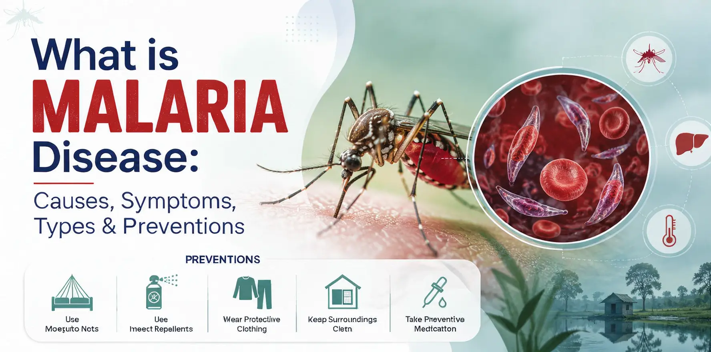
Have you ever wondered why malaria cases increase rapidly during monsoon seasons and in areas with stagnant water? Although malaria is preventable and treatable, it continues to affect millions of people worldwide every year. ...
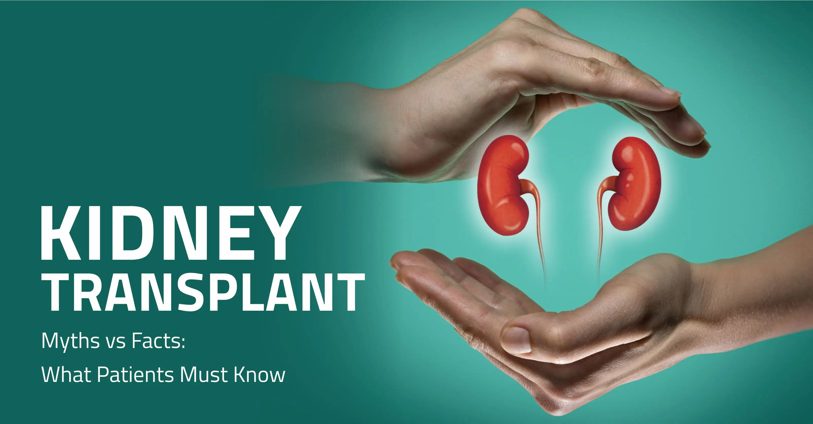
Could a single surgical procedure restore kidney function and significantly improve the quality of life for patients with advanced kidney disease? For many individuals with end-stage renal failure, a kidney transplant offers an effective treatment that can replace long-term dialysis and restore normal filtration. A kidney transplant involves placing a healthy donor kidney into a patient whose kid...
COPYRIGHT 2026 | PRIME HEALTH SERVICES PRIVATE LIMITED. | ALL RIGHTS RESERVED | DESIGNED & POWERED BY MIND FRAME INDIA